APEX · RESOURCES REVIEW · 14 SEPTEMBER 2026
Clarify what users configure, supply, and investigate.
Consolidate supporting tools, separate inputs from run outputs, and preserve distinct editing workflows. The main problem is unclear ownership and inconsistent naming, rather than too many Resources links.
Scope: the five Resources destinations, plus their key accessible subpages, in the connected local app as Dev Admin. Thirteen current-run page states were captured at a 1440 × 1000 desktop viewport. No application data was changed.
Recommended organization
Testing
Home · Tests · Approvals · Tickets
Resources
Applications
Overview · Environments · Requirements · Documents · Linked presets
Knowledge & Documents
Documents · Saved summaries (when durable)
Test Presets
Prompts
Application requirements · Pipeline prompts
Investigation
Existing investigation destinations
Evidence (cross-run, if needed)
Tests → Selected test/run → Evidence (primary home)Application tabs should show filtered views of the same underlying records, not copied catalogs. Keep direct links and remembered scope. Application requirements can stay in the prompt store while being discovered and edited from the application workspace. Presets compose prompt versions; they should link to them rather than absorb their authoring and history.
What to consolidate and separate
- Keep Applications and Environments together: use parent–child pages within one destination; avoid separate global catalogs.
- Consolidate Tickets and Saved Queries: keep defects as a type/view and queries as local navigation.
- Separate Context by purpose: source documents are reusable inputs; evidence belongs to test execution. Summary generation is an action with durable outputs, not the ideal library landing page.
- Keep Test Presets and Prompts distinct: a preset is a reusable bundle; a prompt is independently authored and versioned. Cross-link them.
- Separate application requirements from pipeline instructions within Prompts: use clear categories and application-scoped entry points, not an extra global sidebar item.
Page structure to standardize
Use one descriptive page header with scope, short purpose and primary action. Put local tabs below it, then a compact search/filter toolbar, then results or a detail view. Avoid repeating generic page titles in separate cards. Use breadcrumbs that preserve the selected application or parent resource. Show human-readable names first and IDs only as secondary metadata. Keep advanced JSON and destructive actions behind deliberate controls.
Capture register
Evidence and page-specific recommendations
STEP 01 · Mostly sound
Applications & Environments
Observed: Applications already group their environments, which is the right relationship. The page repeats its title and offers New environment globally alongside Add environment within an application.
Recommendation: Keep one Applications destination. Make application names open a detail workspace; place Environments, Requirements, Documents and linked Presets there as scoped views of canonical resources. Make New application the primary list action and Add environment the primary application action. Add search and project filters when supporting larger inventories.
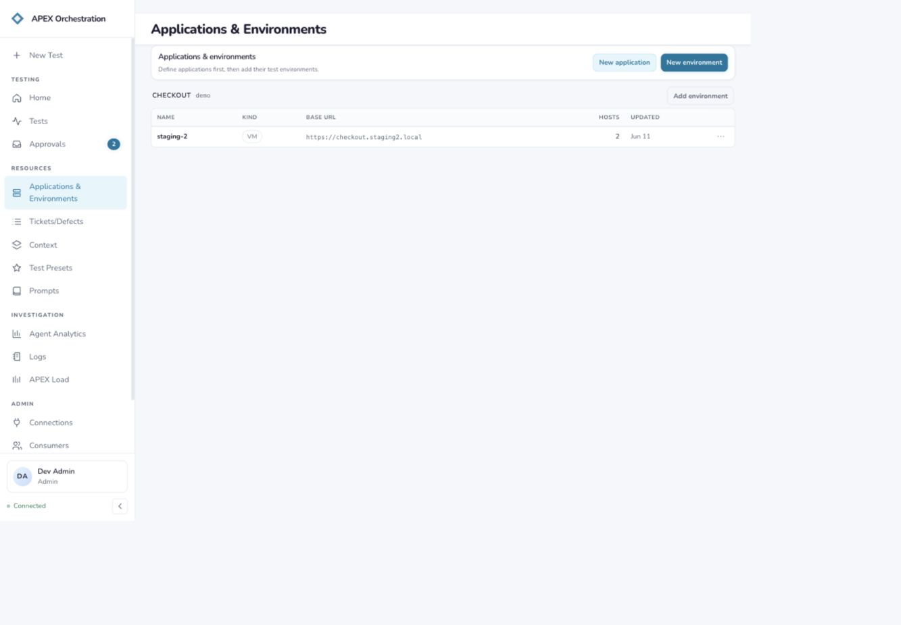
Current audit capture 01 · Applications & EnvironmentsSTEP 02 · Needs clearer hierarchy
Environment detail
Observed: Reference and Inventory are meaningfully separated, and scan freshness is shown. The breadcrumb says Environment Configurations even though the sidebar says Applications & Environments. The heading Environment identifies the object type but not the selected environment. Empty JSON options occupy primary space.
Recommendation: Use Applications → Checkout → Environments → staging-2, with staging-2 as the main title. Rename Reference to Configuration, retain Inventory, and collapse advanced JSON options. Keep scan status and Rescan beside Inventory. Link to related tests without creating another environment catalog.
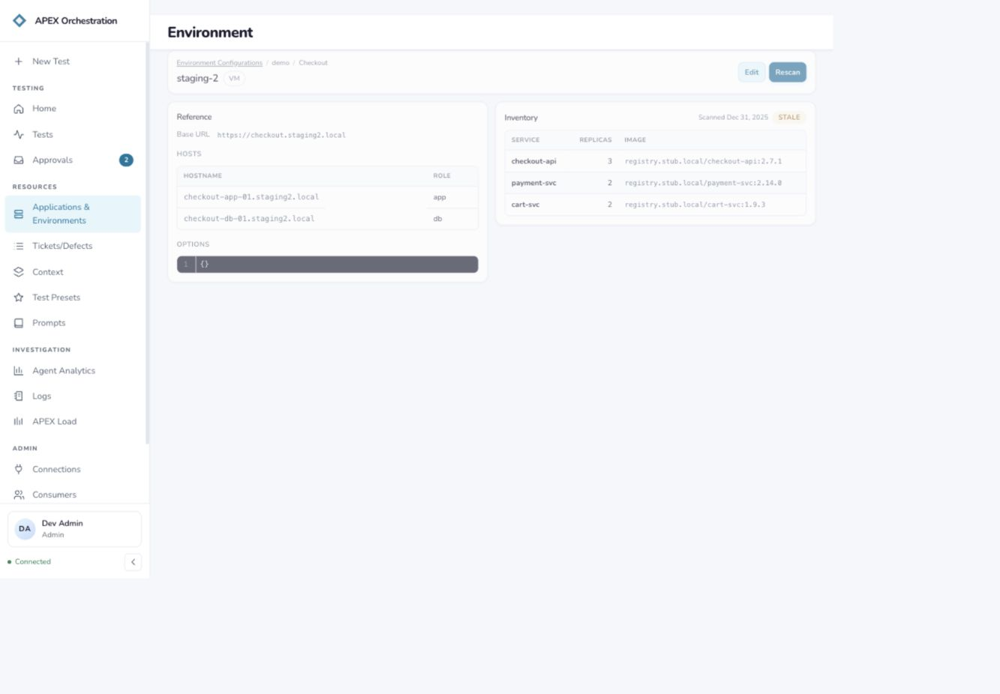
Current audit capture 02 · Environment detailSTEP 03 · Needs a stronger starting point
Tickets: natural-language search
Observed: Natural-language and manual modes support different expertise levels. The initial page is a query console with no work items visible; its one saved query is disabled with rebind required. The title Tickets/Defects, section Ticket console, and empty-state term work items compete.
Recommendation: Keep tickets and defects together, with a Type filter or saved views. Use Tickets consistently; present recent or saved results when available, otherwise actionable starter queries. Identify the active tracker connection and provide a clear repair action for unavailable saved queries. A suitable home is Testing because users select work to test and follow up defects.
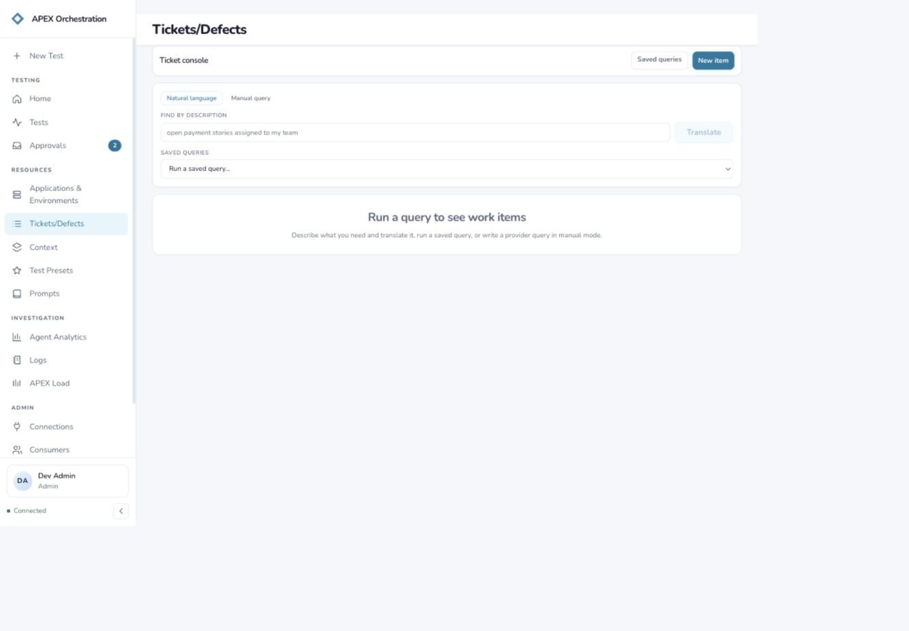
Current audit capture 03 · Tickets: natural-language searchSTEP 04 · Consolidation recommended
Saved Queries
Observed: This thin management page is reached through a Saved queries link and returns through Query console. The row shows the stub provider but does not surface the rebind warning seen in the console selector.
Recommendation: Make Search and Saved queries local tabs under Tickets, preserving a direct URL. Show connection health, query purpose, Run and Edit/Reconnect actions inline. A separate top-level destination is unnecessary.
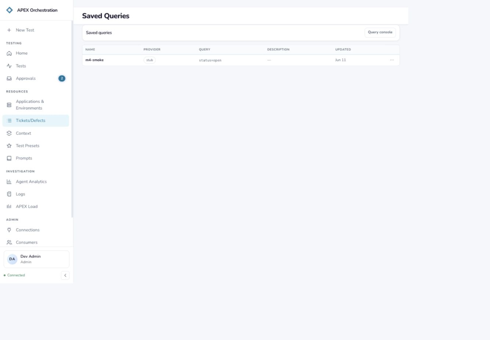
Current audit capture 04 · Saved QueriesSTEP 05 · High structural friction
Context: Summaries
Observed: The default Context tab starts a summary job, while its neighbors hold input documents and generated evidence. The page says it tracks only this session’s submissions and puts results on a run thread. Its two-column empty state squeezes No summary runs yet into a narrow text column.
Recommendation: Rename the durable input library Knowledge & Documents (or Documents if that is its actual scope) and make documents the landing view. Put Generate summary next to selected tickets/documents or inside test setup. Persist summaries with their sources, application and run links; add a Summaries tab only when it contains durable results. Stack the empty-state heading and explanation.
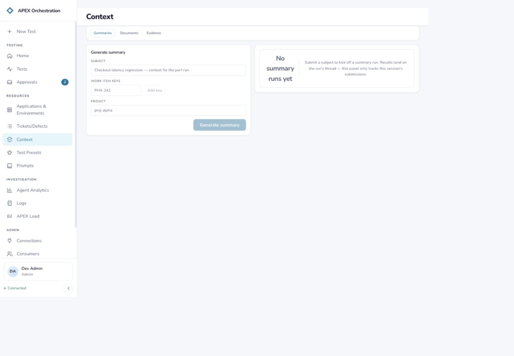
Current audit capture 05 · Context: SummariesSTEP 06 · Needs retrieval actions
Context: Documents
Observed: Search, upload and project/application filters are available. Project and application are free-text inputs with placeholder-only visible labels. Four notes.txt rows have identical type and size and the same displayed day; Delete is the only row action exposed.
Recommendation: Provide named project/application selectors and persistent visible labels. Make the filename open a preview/details view. Add scope, owner or version and full timestamp on demand to distinguish same-named records. Add Use in test and move Delete into an overflow menu. Treat these as source documents, separate from run outputs.
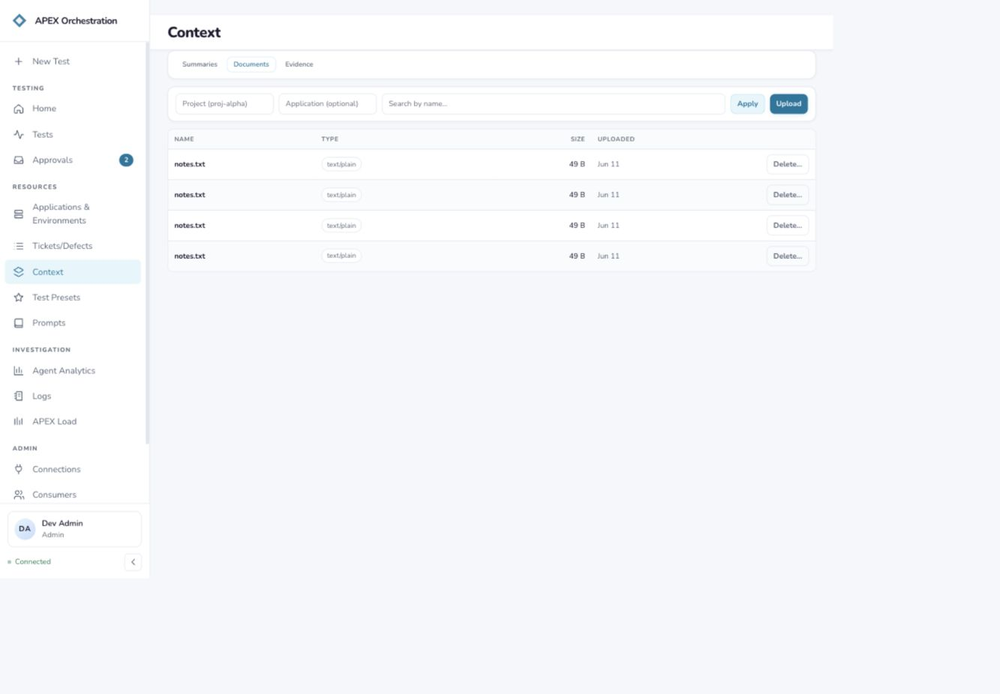
Current audit capture 06 · Context: DocumentsSTEP 07 · Separation recommended
Context: Evidence
Observed: The empty state explicitly says evidence accrues from pipeline runs and contains phase outputs, tracker lookups and log findings. Users filter by project and optional thread ID, disconnected from selecting a recognizable test.
Recommendation: Make evidence primarily a tab within a test/run, grouped by phase, with source and timestamp. Offer a cross-run Evidence view under Investigation when needed. Preserve links to contributing documents and tickets; do not merge the input library with execution output.
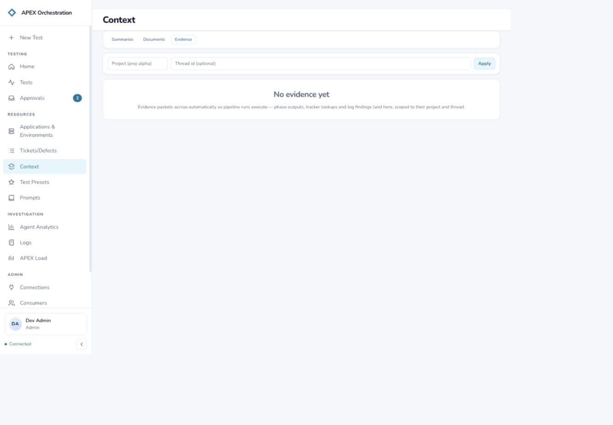
Current audit capture 07 · Context: EvidenceSTEP 08 · Blocked by service error
Test Presets
Observed: The sidebar says Test Presets, the header says Golden Configs and the description says Published assistants. The page returned HTTP 500 and exposes raw error JSON; a Retry action is available.
Recommendation: Use Test Presets throughout and explain the outcome: reusable test settings, phases, approvals and prompt versions. Fix the load failure and show a plain error with technical details behind disclosure. Keep presets separate from individual prompts; offer linked prompt versions and Use preset. The successful list/detail experience requires a follow-up capture.
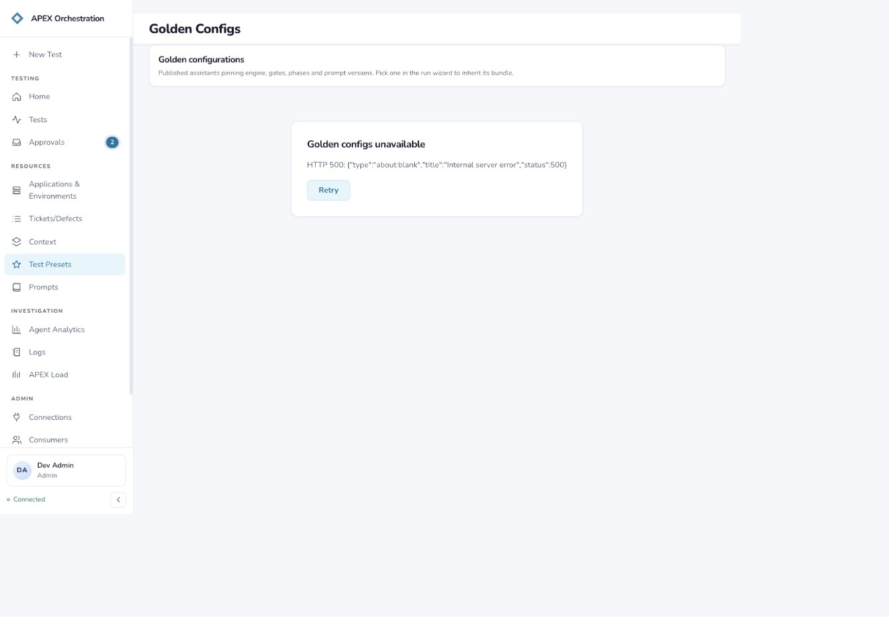
Current audit capture 08 · Test PresetsSTEP 09 · Useful pattern; layout problems
Prompts catalog
Observed: Search, namespace filters, active version badges and list-with-preview support browsing. Application requirements appear alongside phase instructions. An opaque application key dominates the name; the long key crowds the description and preview header at the captured desktop width.
Recommendation: Retain the catalog and full editor. Use human-readable names and secondary copyable IDs. Make Application requirements and Pipeline prompts explicit categories. Link application requirements from the application workspace. Ensure table columns truncate/wrap deliberately, preview headers can wrap, and narrow layouts stack or open the preview on demand.
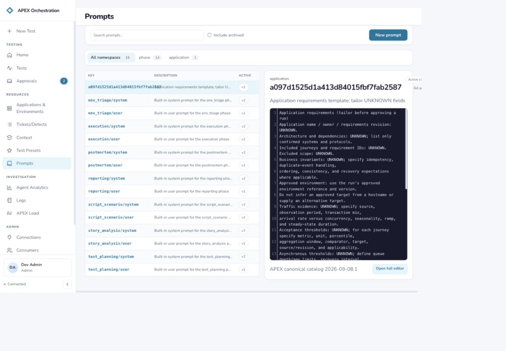
Current audit capture 09 · Prompts catalogSTEP 10 · Mostly sound
Prompt content
Observed: Content and Versions are separated and Test in playground is easy to find. The detail breadcrumb is a namespace plus opaque key, with generic Prompt as the main page title. Archive appears alongside routine authoring actions.
Recommendation: Use a descriptive prompt title with breadcrumb back to Prompts. Keep Content and Versions; add References/Used by to expose related presets and applications. Keep New version primary and move Archive into a secondary menu.
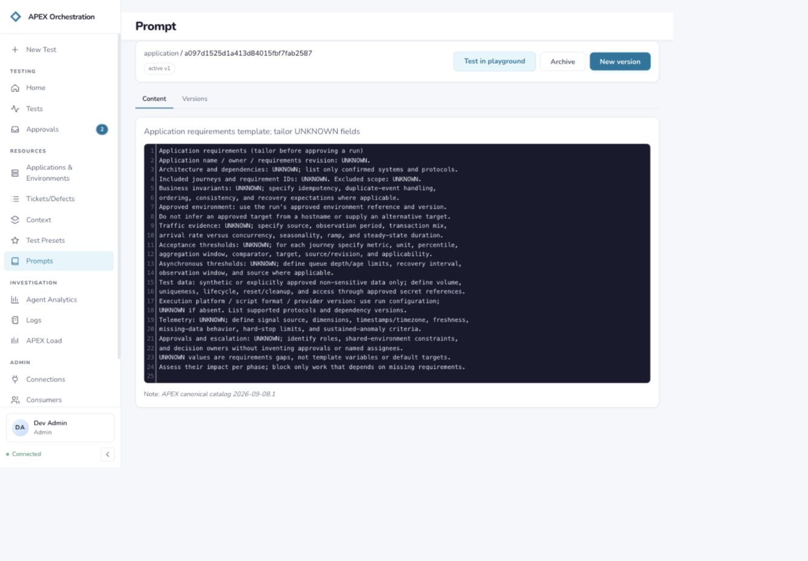
Current audit capture 10 · Prompt contentSTEP 11 · Sound separation
Prompt versions
Observed: Version history has active status, author, age and a View link. This is a distinct editing/history task that benefits from a local tab rather than another sidebar entry.
Recommendation: Keep this local to a prompt, preserving deep links. Make comparison and active-version consequences clear when multiple versions are present. Only one version was inspected, so rollback and multi-version comparison were not validated.
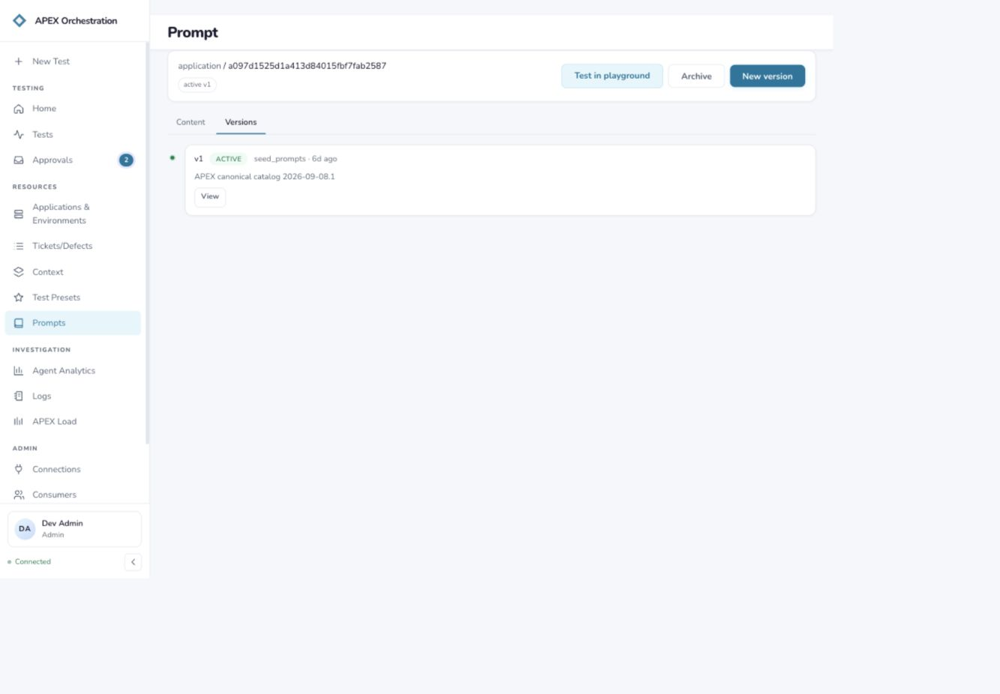
Current audit capture 11 · Prompt versionsSTEP 12 · Expectation mismatch
Prompt playground
Observed: The page discloses that it performs deterministic template rendering rather than model evaluation or tool execution, but the action says Run test. Its empty state mentions live output as a future follow-up and repeats the cramped two-column empty-state layout.
Recommendation: Keep a dedicated workbench reachable from the prompt. Rename the current action Check template or Preview rendered prompt, label the tool Template preview, and present inline rendered output/validation feedback when available. Reserve model-evaluation language for actual model evaluation; preserve the content/version context.
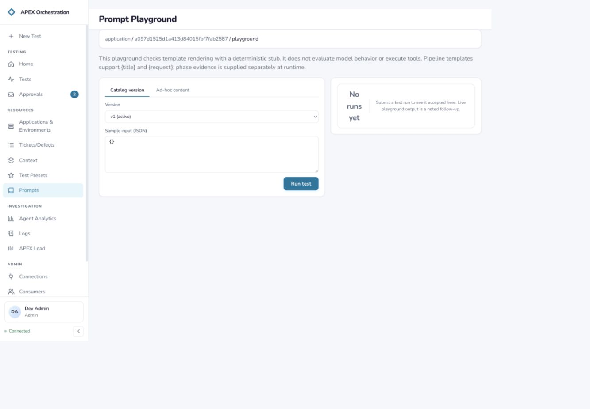
Current audit capture 12 · Prompt playgroundSTEP 13 · Useful advanced mode; needs guidance
Tickets: manual query
Observed: Manual mode exposes a free-text Provider field, provider query, page size, Execute and Save query. It shares the same blank results and disconnected saved-query selector.
Recommendation: Retain manual query as an advanced mode within Tickets. Choose a configured connection by name rather than requiring provider text; identify query syntax, retain the query and show saved queries/results in the same workspace. Do not split defects into a second query console.
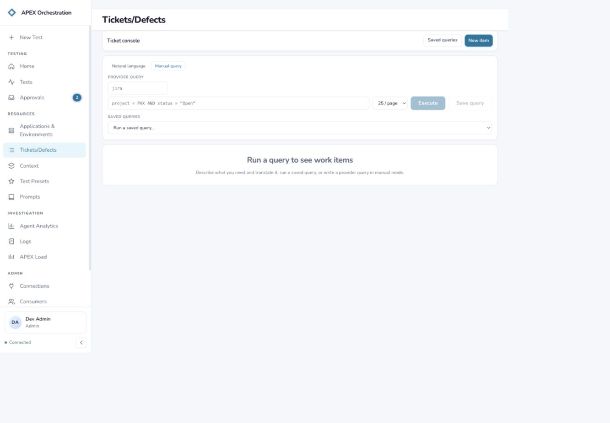
Current audit capture 13 · Tickets: manual queryAccessibility risks and limits
Useful foundations are present: the inspected accessibility trees expose a main landmark, skip link, named controls and selected tab states. Risks include low-emphasis secondary text, small controls, placeholder-only visible labels in Context filters, crowded prompt identifiers, and unclear wording for internal IDs. These observations warrant contrast, target-size, keyboard, zoom/reflow and screen-reader checks; they are not a WCAG compliance verdict.
The evidence and summary lists were empty, Tickets had no executed query and its saved query required rebinding, and Test Presets failed to load. Ticket results/detail, successful summary/evidence flows, preset detail and create/save/delete actions were not visually validated. The playground was inspected but not executed. The populated data includes demo/stub-like records, so actual inventory scale and production content were not assessed. This is a desktop structural review, not a complete responsive or accessibility audit.
Supplemental code inspection confirmed that presets bundle scope, engine, gate policy, prompt overrides and limits, with structured read sections and advanced JSON editing. This supports the recommendation to keep presets distinct from prompts, but is not a substitute for capturing the blocked success state.
Suggested sequence
- First: Restore Test Presets loading; align route, page and breadcrumb labels; repair prompt overflow and compressed empty states. These are clear fixes with little information-architecture disruption.
- Next: Move Saved Queries into Tickets local navigation; use named scope/connection selectors; make document preview/use the main row actions.
- Then: Separate Context into durable inputs and run evidence; make application pages the scoped entry point to their environments, requirements and documents. Validate this navigation against realistic preparation and investigation tasks.